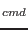

| rcaract |
| Substitue le caractère courrant par le caractère "caract". |
Rtexte
 |
| Réécrit le texte saisi "texte" par dessus ce qui est
déjà présent. Ceci équivaut au mode "surimpression"
des éditeurs pleine-page classiques comme "EVE" ou
"LSEDIT" sous OpenVMS. Le remplacement de texte
se termine par la touche
. En mode "insertion",
le texte saisi est inséré à la position courrante du curseur.
En mode "surimpression", tout ce qui est saisi vient
s'écrire par dessus le texte déjà existant. |
| stexte
|
| Substitue le caractère courrant avec le texte saisi "texte".
L'insertion du nouveau texte se termine par
. Par conséquent,
après la saisie de la commande "s", "vi" passe
en mode "insertion". |
| Stexte
ou cctexte
|
| Efface la ligne courrante et la substitue par le texte saisi
"texte". L'insertion du nouveau texte se termine par
. Par conséquent, après la saisie de la commande
"s" ou "cc", "vi" passe
en mode "insertion". |
| cwtexte
|
| Change le mot courrant par le texte saisi "texte".
L'insertion du nouveau texte se termine par
. Par conséquent,
après la saisie de la commande "cw", "vi" passe
en mode "insertion". |
| Ctexte
|
| Change le reste de la ligne à partir de la position courrante par le
texte saisi "texte". L'insertion du nouveau texte se termine
par
. Par conséquent, après la saisie de la commande
"C", "vi" passe en mode "insertion". |
| ccurstexte
|
| De façon plus générale, la commande "c" suivie d'une
commande "vi" de déplacement de curseur (cf. section
![[*]](crossref.png) ), change le texte correspondant avec ce qui a
été saisi, jusqu'à ce que la touche
soit pressée.
Par conséquent, après la saisie de la commande
"ccurs", "vi" passe en mode
"insertion". ), change le texte correspondant avec ce qui a
été saisi, jusqu'à ce que la touche
soit pressée.
Par conséquent, après la saisie de la commande
"ccurs", "vi" passe en mode
"insertion". |
| J |
| Rassemble la ligne courrante et la ligne suivante sur une seule et
même ligne. |
| nJ |
| Rassemble les "n" lignes, y compris la ligne courrante, sur
une seule et même ligne. |
| |
| |